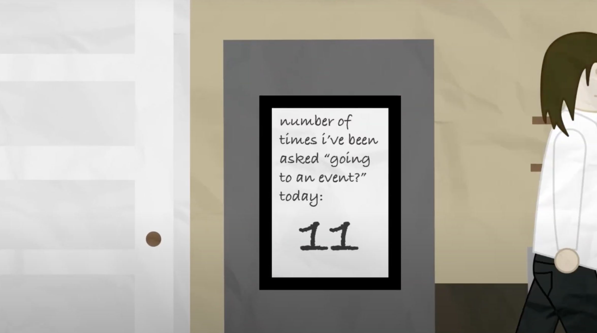
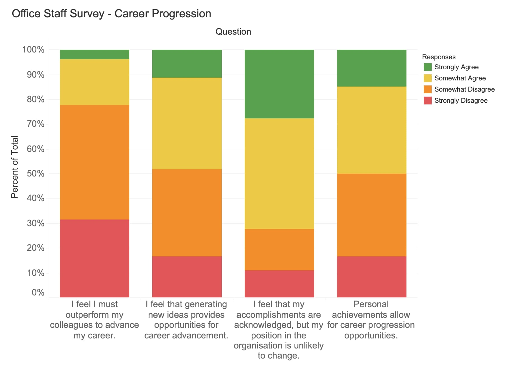

I am a student at Worcester Polytechnic Institute studying computer
science. I tend to focus on highly stylized 2D graphics, creating data-powered or generative
visualizations and the tools used to make them. I prefer writing frameworks from
the ground up using plain JavaScript, only using the technologies
necessary to create a functional, performant project. Some of these
projects explore linear algebra,
fractals, and compute shader simulations, some branching into multi-media.
My work in graphics is fueled by a overwhelming love for design and
visual rhetoric that touches almost every area of my life. Fashion
forms the bulk of my creative output, influencing my participation in
online
fashion communities and passion for
experimental styling. I do my best to demystify designer clothing and
share ways of obtaining it affordably, aided by thrifting and upcycling
projects. Occasionally, programming, fashion, and design come together
in visual storytelling

.
In addition to hobbyist game development, I draw from my experience with
level
design, content curation, and quality assurance, navigating
the complex content approval systems that exist within both academia
and community game projects. I spend time thinking about
public transportation and urban history, exploring how patterns of activism help shape the
development of urban amenities. I have worked with non-profits and
municipal organizations doing web marketing and social science research

. Coming from a privileged upbringing, I write about
family, queerness, and the upper-middle class. Finally, I
pour
lattes sometimes.